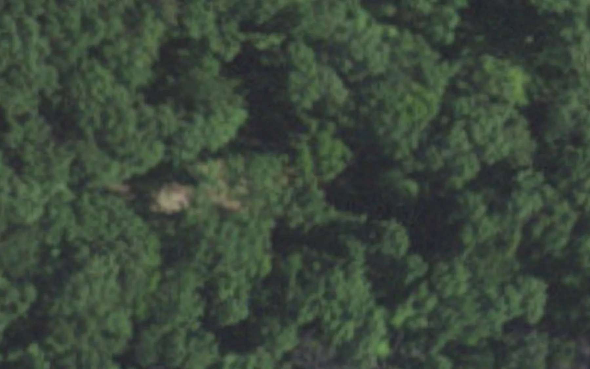
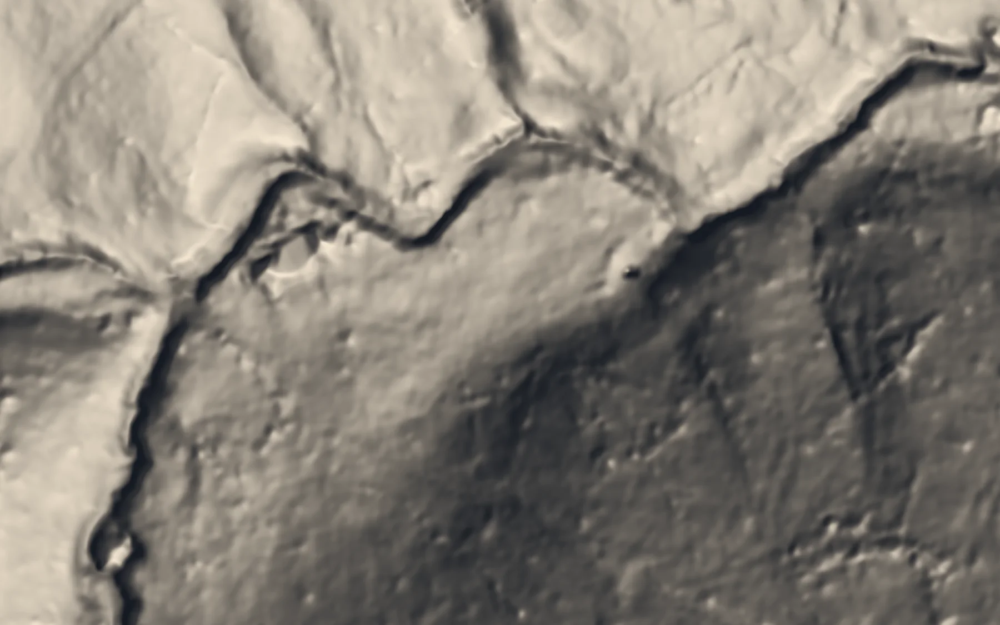
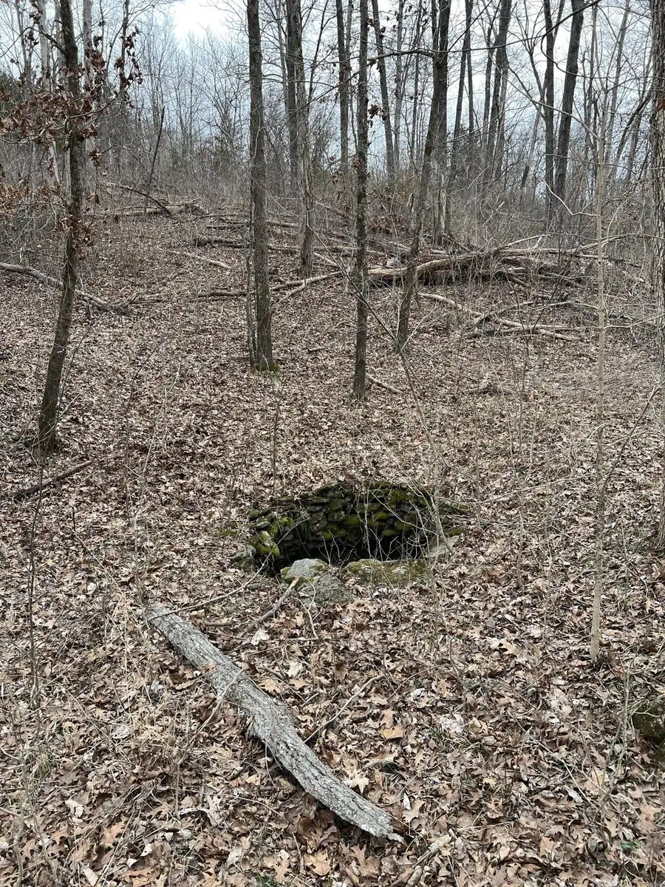
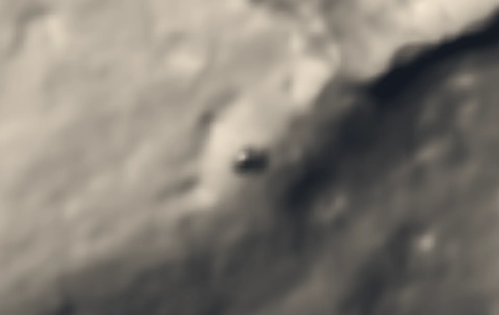
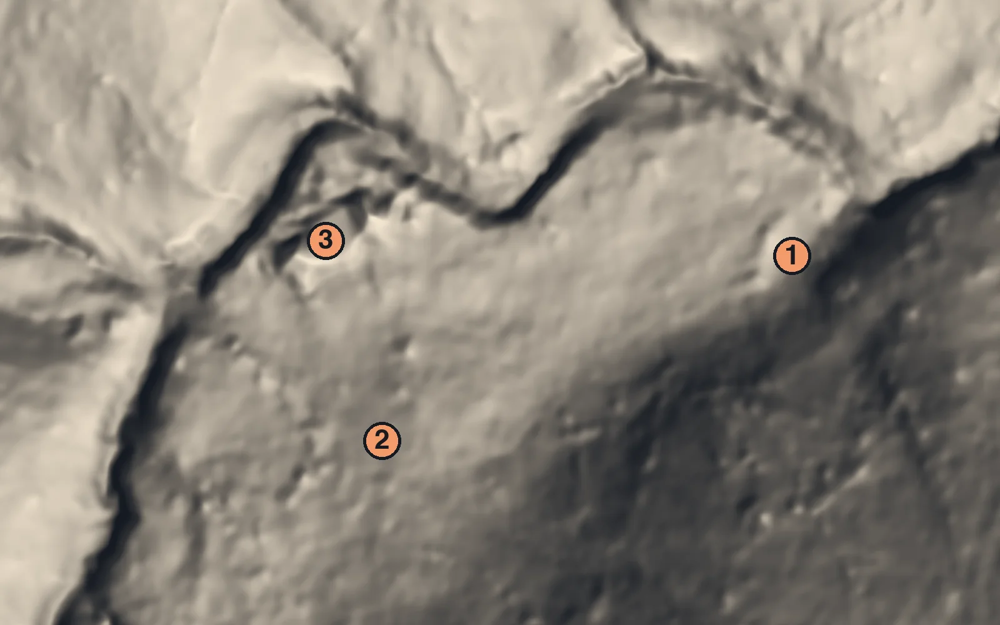
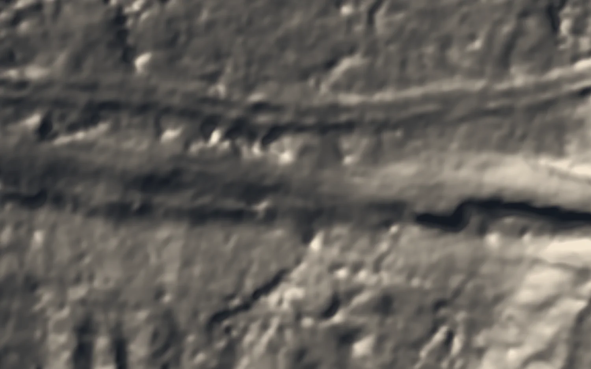
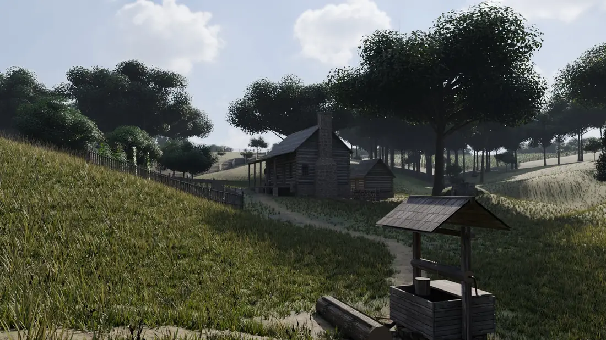

Land Under the Trees
A free laser survey sees through the trees. Here is what it found in my woods, and how I took it back out there on my phone.

Camera
LaserWhat the camera can't see
From above, my woods are just treetops. In the spring of 2020, before the leaves came out, a USGS plane swept this ground with a laser. Most of the pulses slipped past the bare branches and hit the dirt.
More info on this piece
The U.S. Geological Survey's 3D Elevation Program has flown most of the country this way, and the point clouds are free. My fetch script pulls only the pieces that cover my land.
The standard map made from those points is a 1 meter grid: fine for hills, useless for a well. So I rebuilt the ground from the raw points at 25 cm, keeping the low returns that a normal ground filter smooths over.
An honest limit: the flight put down about 2.7 ground returns per square meter, about one every 60 cm. At 25 cm most of the grid is filled in between points, so a small shape here is a reason to go look, never proof.

A stone well in the woods
This is where it started: a hand-dug well lined with dry-laid stone, out in the trees. No old map shows a house anywhere near it.
More info on this piece

The well was found on foot, not by the laser. No pulse reached the bottom of that pit, so whether it is the well is still a thing to check on the ground.
Old county plat books and USGS topographic maps show houses coming and going nearby, but none ever marks one by the well. A well sat a few steps from a kitchen door, so the likeliest answer is a farm that no map recorded: a house gone before the earliest map, or a tenant cabin the plat book left off. The deed index and the old census are next.

What the laser found around it
Around the well, the ground tells the rest: a level bench, the only flat spot nearby, and a ring-shaped mound that could be a fallen chimney. That is the footprint an old farmstead leaves.
More info on this piece
I wrote a scanner that looks for shapes across the whole survey: pits, mounds, level pads, benches, grooves and banks. Each shape can be several things. A pit might be a well, a cellar or a tree blown over by the wind.
Every spot is scored 0 to 100 as "worth walking to": how well its shape fits, minus a test for each look-alike (tree throws, runoff, bedrock, old logs, brush piles), times how many real laser returns back it up. Anything standing on thin data stays rated low until someone checks it on foot.
The mound is rated low. It could also be a brush pile.
The scanner keeps its mistakes on the map. My first look, by eye, called another open area a levelled house site. The closer pass said old field and fill, and the marker now says so.

An old road under the leaves
A sunken track with a bank runs through the woods, worn down by wagons and boots long before the trees came back. Old fence rows show up too, as low steps where plowing piled soil against the wire.
More info on this piece
A track and a gully can look alike. A track keeps an even width and a gentle grade; a gully follows the water downhill.
A fence row survives as a straight step in the slope that ignores the ravines it crosses. Trees grew up along the wire, and decades of plowing piled soil against it. If the ground on one side is smoother, that side was a field.

What it might have looked like
I rendered the farm around 1880 on the real laser ground, from beside the well. The land, the well and the bench come from the data. The cabin is an educated guess.
More info on this piece
- From the data: the terrain, the well, the bench, the lanes, the fence lines.
- Inferred: fields on the old plowed ridgetops, pasture on the gentle slopes, woods in the ravines.
- Guessed, typical of the time: the cabin, the outbuildings, the garden, the orchard.
Built in Blender.
In my pocket in the woods
- Works with no signal.
- My GPS dot over the laser maps and the old aerial photos.
- Log a find with a photo; it syncs when I'm back.
More info on this piece
It is the Land screen in Alfred, my personal command center, built in Swift with SwiftUI and MapKit. Finds are saved on the phone first and sent to Alfred's server the next time there is a connection; each find carries its own id, so sending it twice never makes two. The map data never goes into the code repository. The walk list also exports as a GPX file for any GPS app.
The rules for the walk: look, don't dig. Leave anything that might be a grave alone. Ask before stepping onto someone else's land.
The survey work is Python with NumPy, SciPy and laspy. The LiDAR, the aerial photos and the old maps are public data.